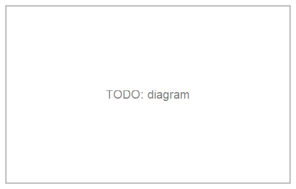

Transforming in Bulk: Macros
Applying the same transform to several shapes one at a time is repetitive: c2 = rotate(c, angle); s2 = rotate(s, angle); t2 = rotate(t, angle). Every transform in the package (translate, rotate, homothety, reflection, invert/ invert_neg, and EGAffineMap application) has a matching macro that instead takes a whole begin ... end block naming several shapes at once, applies the transform to each, and returns the results together as a tuple — plus a mutating ! counterpart that rebinds each shape's own variable instead of returning a copy. @boundingbox follows the same block syntax to build the one box around everything listed, rather than applying a transform.
| Macro | Transform applied | Mutating form |
|---|---|---|
@boundingbox | — (builds one EGBoundingBox around everything) | — |
@translate | translate | @translate! |
@rotate | rotate | @rotate! |
@homothety | homothety | @homothety! |
@reflection | reflection | @reflection! |
@invert | invert | @invert! |
@invert_neg | invert_neg | @invert_neg! |
@affinemap | any EGAffineMap | @affinemap! |

Reading the block
Every one of these macros reads its begin ... end block the same way, top to bottom, as ordinary code (not a new scope — there's no let):
- an assignment
name = exprruns as written, andname's value is the one transformed; - a destructuring assignment
name1, name2, ... = expr— what functions returning several shapes at once naturally look like, e.g.external_tangent_lines— runs the same way, and each name is transformed individually, exactly as if it had its ownname = ...line; - a bare expression — most often the name of a shape defined earlier, outside the block or on an earlier line inside it — has its value transformed directly, with nothing (re)assigned.
A single shape/expression instead of a full block also works (@rotate angle c), treated as a one-line block; with only one item, the result is returned bare rather than wrapped in a 1-tuple.
using EuclideanGeometry
c = EGCircle2(EGPoint(1.0, 2.0), 3.0)
s = EGSegment(EGPoint(0.0, 0.0), EGPoint(4.0, 0.0))
C2, S2 = @rotate (pi / 2) begin
c
s
end
C2, S2(EGCircle2([-2.0, 1.0000000000000002], 3.0), EGSegment([0.0, 0.0] -> [2.4492935982947064e-16, 4.0]))c1, c2 = EGCircle2(EGPoint(0.0, 0.0), 2.0), EGCircle2(EGPoint(10.0, 0.0), 1.0)
L1, L2 = @rotate (pi / 2) begin
l1, l2 = external_tangent_lines(c1, c2) # destructuring assignment
end
L1, L2(EGLine([-1.98997487421324, 0.20000000000000012] -> [-0.9949874371066193, 10.1]), EGLine([1.98997487421324, 0.1999999999999999] -> [0.9949874371066206, 10.1]))A named item can even be a plain Vector of shapes — what intersection/tangent_points return, since they can give 0, 1 or 2 points depending on the geometry — and it's transformed element-wise, via translate/rotate/homothety/ reflection/invert/invert_neg's own AbstractVector{<:EGObject} methods (plain broadcasting under the hood):
P1, P2 = intersection.(l1, [c1, c2]) # each a Vector{EGPoint} (l1 is tangent to both)
Q1, Q2 = @rotate (pi / 2) begin
P1
P2
end
Q1, Q2(EGPoint{2, Float64}[[-1.98997487421324, 0.2000000000000001]], EGPoint{2, Float64}[[-0.9949874371066191, 10.100000000000001]])@boundingbox
Builds one EGBoundingBox around every shape listed — shorthand for reduce(bbox_union, EGBoundingBox.(shapes)), bbox_union itself being the box around two boxes:
t = EGTriangle(EGPoint(0.0, 0.0), EGPoint(5.0, 1.0), EGPoint(2.0, 4.0))
circ = EGCircle2(EGPoint(-1.0, -1.0), 1.5)
@boundingbox begin
t
circ
endEGBoundingBox([-2.5, -2.5] .. [5.0, 4.0])bbox_union(EGBoundingBox(t), EGBoundingBox(circ)) # exactly what @boundingbox computed aboveEGBoundingBox([-2.5, -2.5] .. [5.0, 4.0])Blocks like this often mix in plain construction helpers alongside the actual shapes — a center point, a radius, a scalar computed along the way. EGBoundingBox handles every one of those without erroring:
- a bare
EGPointgets its own degenerate (zero-size) box at its own location — a point is a position, so it grows abbox_unionexactly like any other shape; - a plain number, an
EGVector(a direction, not a location), or an unbounded curve/region (EGLine,EGRay,EGAngle2,EGHalfPlane2,EGStrip2) has no position of its own to report, soEGBoundingBoxreturns the empty box for these instead — the identity element forbbox_union, so combining it with anything else just returns that other box unchanged:
centro = EGPoint(2.0, 1.0)
radio = 5.0
@boundingbox begin
centro
radio
endEGBoundingBox([2.0, 1.0] .. [2.0, 1.0])isempty(EGBoundingBox(radio)), bbox_union(EGBoundingBox(radio), EGBoundingBox(centro)) == EGBoundingBox(centro)(true, true)An empty block is an ArgumentError — there's no box to build:
try
@boundingbox begin end
catch e
e
endArgumentError("@boundingbox: the block has no shapes")@to_luxor_picture / @to_luxor_picture!
Preparing a set of shapes to actually draw usually means answering three fiddly questions by hand: how big is this thing, how far do I need to shift it so it isn't half off-canvas, and what canvas size do I even pass to Drawing? @to_luxor_picture answers all three in one call: it translates and uniformly scales every shape in the block so their combined EGBoundingBox fits centered on (0, 0), and returns the exact canvas size — as a (width=w, height=h) NamedTuple — alongside the transformed shapes. Centering on (0, 0) matches Luxor's own origin() convention, so the result is ready to draw right after origin() — which @png/@svg/@pdf already call for you. Despite the name, this macro is plain geometry — it has no Luxor dependency at all; see Drawing with Luxor.jl for the full Drawing/path/finish workflow this is designed to feed directly.
It also reflects everything across the x-axis by default (flip=true): this package's own geometry follows the standard math convention (y up, counterclockwise angles positive), but Luxor — like most 2D graphics APIs — draws with y increasing downward, so left uncorrected, everything would render as a vertical mirror image of how it reads on paper. Pass flip=false to get the raw, un-mirrored coordinates instead:
t = EGTriangle(EGPoint(0.0, 0.0), EGPoint(80.0, 0.0), EGPoint(0.0, 80.0))
_, t2 = @to_luxor_picture width = 200.0 begin
t
end
t2.c # (0, 80) in t's own coordinates ends up with a *negative* y here[-100.0, -100.0]_, t2_noflip = @to_luxor_picture width = 200.0 flip = false begin
t
end
t2_noflip.c # flip=false: the raw, un-mirrored coordinates[-100.0, 100.0]c = EGCircle2(EGPoint(3.0, -1.0), 5.0)
s = EGSegment(EGPoint(-2.0, 4.0), EGPoint(6.0, -3.0))
sz, (c2, s2) = @to_luxor_picture begin
c
s
end
sz # the combined bbox is already 10x10, so this is its natural size(width = 10.0, height = 10.0)Being a NamedTuple, sz supports sz.width/sz.height — but also still destructures positionally exactly like a plain tuple would, so (w, h) = sz (or (w, h), (c2, s2) = @to_luxor_picture begin ... end directly) works too, if that's all you need:
sz.width, sz.height(10.0, 10.0)c2, s2 # translated so the combined bbox is centered on (0, 0)(EGCircle2([0.0, 0.0], 5.0), EGSegment([-5.0, -5.0] -> [3.0, 2.0]))c/s themselves are untouched (see @to_luxor_picture! below for the mutating form); the block is read exactly like @boundingbox's (an assignment or a destructuring assignment binds its name(s) as usual, a bare expression contributes without binding anything, and a single shape/expression works without begin/end too) — including how construction helpers are handled: a bare EGPoint is repositioned along with everything else (it's a real position), while a plain number or an EGVector is left completely untouched (there's no position to move, and a number in particular isn't the kind of value translate/homothety know how to transform):
centro = EGPoint(2.0, 1.0)
radio = 5.0
circ2 = EGCircle2(centro, radio)
(w, h), (centro2, radio2, c2) = @to_luxor_picture width = 400.0 begin
centro
radio
circ2
end
radio2 == radio, centro2 # radio2 untouched; centro2 repositioned like circ2(true, [0.0, 0.0])An unbounded shape (EGLine, EGRay, EGAngle2, EGHalfPlane2, EGStrip2) is a third case: it doesn't contribute to the canvas size (no finite extent to report — see EGBoundingBox()), but it is still repositioned along with everything else, since — unlike a number or a vector — it does have a position and does support translate/ homothety like any other shape:
c1, c2 = EGCircle2(EGPoint(0.0, 0.0), 3.0), EGCircle2(EGPoint(10.0, 0.0), 3.0)
(w, h), (c1_2, c2_2, ext1, ext2) = @to_luxor_picture width = 200.0 begin
c1
c2
ext1, ext2 = external_tangent_lines(c1, c2) # destructuring assignment
end
ext1 # repositioned exactly like c1_2/c2_2, even though its own bbox is emptyEGLine([-62.5, -37.5] -> [62.5, -37.5])A block with nothing but non-positional values (numbers/vectors, with no shape carrying a real position at all) is an ArgumentError — there's no finite content to size a canvas around.
A named item can also be a plain Vector of shapes (see the same capability under Reading the block above) — e.g. the result of intersection.(ext1, [c1, c2]) — and it's repositioned element-wise right alongside everything else.
Sizing options
| Option | Effect |
|---|---|
| (none) | scale factor 1.0 — the shapes' own coordinate units become output units directly |
scale | a literal, uniform multiplier |
width (alone) | scaled so the content's width comes out exactly width minus margin; height follows to preserve the aspect ratio |
height (alone) | symmetric |
width and height | a "contain" fit: scaled by whichever of the two is more restrictive, so the content fits inside both without distortion |
margin | blank space guaranteed around the content on every side (default 0.0) |
scale and width/height are mutually exclusive — combining them is an error. The scale factor is always the same in x and y: a circle passed through @to_luxor_picture is always still a circle, never distorted into an ellipse, no matter which sizing option is used.
c, s = EGCircle2(EGPoint(3.0, -1.0), 5.0), EGSegment(EGPoint(-2.0, 4.0), EGPoint(6.0, -3.0))
(w, h), _ = @to_luxor_picture width=400.0 begin
c
s
end
(w, h) # height follows to keep the (here already square) aspect ratio(400.0, 400.0)c, s = EGCircle2(EGPoint(3.0, -1.0), 5.0), EGSegment(EGPoint(-2.0, 4.0), EGPoint(6.0, -3.0))
(w, h), _ = @to_luxor_picture scale=2.0 begin
c
s
end
(w, h) # canvas size is derived from the scaled content, not requested(20.0, 20.0)When width and height are given together and don't match the content's own aspect ratio, the content is scaled by whichever bound is more restrictive and centered in the requested canvas — extra blank space (beyond margin) lands on whichever axis has slack, rather than stretching the content to fill it:
t = EGTriangle(EGPoint(0.0, 0.0), EGPoint(6.0, 0.0), EGPoint(3.0, 5.0))
circ = EGCircle2(EGPoint(3.0, 2.0), 1.5)
(w, h), (t2, circ2) = @to_luxor_picture width=400.0 height=200.0 margin=10.0 begin
t
circ
end
(w, h), circ2 # circ2 is still an EGCircle2 -- never distorted((400.0, 200.0), EGCircle2([0.0, 18.0], 54.0))margin works the same way whether or not width/height are given — with neither, it simply pads the content's own natural size on every side:
c, s = EGCircle2(EGPoint(3.0, -1.0), 5.0), EGSegment(EGPoint(-2.0, 4.0), EGPoint(6.0, -3.0))
(w, h), _ = @to_luxor_picture margin=3.0 begin
c
s
end
(w, h) # the natural 10x10 size, padded by 3 on every side(16.0, 16.0)Combining scale with width/height is an error — raised as soon as the macro call itself is expanded, before any of the block even runs:
try
eval(:(@to_luxor_picture scale=2.0 width=10.0 c))
catch e
e
endLoadError("macros.md", 331, ErrorException("@to_luxor_picture: `scale` cannot be combined with `width`/`height`"))@to_luxor_picture!
The mutating counterpart: rebinds each named shape (an assignment, or a bare reference to a shape defined earlier) to its own translated/scaled image, instead of returning copies — the same relationship @translate! has to @translate. Since the shapes are already accessible under their own names afterward, it returns just the (width=w, height=h) NamedTuple:
c3 = EGCircle2(EGPoint(3.0, -1.0), 5.0)
s3 = EGSegment(EGPoint(-2.0, 4.0), EGPoint(6.0, -3.0))
(w, h) = @to_luxor_picture! width=50.0 begin
c3
s3
end
(w, h), c3, s3 # c3/s3 themselves now refer to the translated/scaled shapes((50.0, 50.0), EGCircle2([0.0, 0.0], 25.0), EGSegment([-25.0, -25.0] -> [15.0, 10.0]))A bare, unnamed expression has nothing to rebind, so this form rejects it (same as @translate! and the rest of that family) — see Drawing with Luxor.jl for the complete pipeline, from a bare set of EGPoint/EGTriangle/etc. all the way to a finished PNG.
@translate / @translate!
v = EGVector(2.0, -1.0)
T1, S1 = @translate v begin
t
s
end
T1EGTriangle([2.0, -1.0], [8.0, -1.0], [5.0, 4.0])t/s themselves are untouched by @translate — @translate! instead rebinds each named shape's own variable to its translated image (the object itself never mutates, since these are all immutable structs; only the variable is repointed, the same trick Setfield.jl's @set! uses):
t3 = EGTriangle(EGPoint(0.0, 0.0), EGPoint(1.0, 0.0), EGPoint(0.0, 1.0))
@translate! v t3
t3 # t3 itself now refers to the translated triangleEGTriangle([2.0, -1.0], [3.0, -1.0], [2.0, 0.0])A bare, unnamed expression has nothing to rebind, so the mutating forms reject it:
try
@translate! v begin
EGPoint(0.0, 0.0) # not assigned to a name
end
catch e
e
endArgumentError("cannot mutate an unnamed expression — assign it to a variable first")@rotate / @rotate!
Takes an optional center (defaults to the origin, exactly like rotate itself):
R1, R2 = @rotate (pi / 2) EGPoint(1.0, 1.0) begin
t
circ
end
R1EGTriangle([2.0, 0.0], [2.0, 6.0], [-3.0, 3.0000000000000004])t4 = EGTriangle(EGPoint(0.0, 0.0), EGPoint(1.0, 0.0), EGPoint(0.0, 1.0))
@rotate! (pi / 2) t4
t4EGTriangle([0.0, 0.0], [6.123233995736766e-17, 1.0], [-1.0, 6.123233995736766e-17])@homothety / @homothety!
Also takes an optional center (default: the origin):
H1, H2 = @homothety 2.0 begin
t
circ
end
H1EGTriangle([0.0, 0.0], [12.0, 0.0], [6.0, 10.0])t5 = EGTriangle(EGPoint(0.0, 0.0), EGPoint(1.0, 0.0), EGPoint(0.0, 1.0))
@homothety! (-1.0) EGPoint(0.5, 0.5) t5 # a point reflection through (0.5, 0.5)
t5EGTriangle([1.0, 1.0], [0.0, 1.0], [1.0, 0.0])@reflection / @reflection!
about a point or a line, same as reflection itself:
mirror = EGLine(EGPoint(0.0, 0.0), EGPoint(1.0, 1.0))
M1, M2 = @reflection mirror begin
t
circ
end
M1EGTriangle([0.0, 0.0], [0.0, 6.0], [5.0, 3.0])t6 = EGTriangle(EGPoint(0.0, 0.0), EGPoint(1.0, 0.0), EGPoint(0.0, 1.0))
@reflection! EGPoint(2.0, 2.0) t6
t6EGTriangle([4.0, 4.0], [3.0, 4.0], [4.0, 3.0])@invert / @invert! and @invert_neg / @invert_neg!
invert/invert_neg with respect to the circle centered at center (radius k, defaulting to 1.0) — note that inversion can change a shape's own type (an EGLine not through center inverts to an EGCircle2, and vice versa), no different here:
center = EGPoint(0.0, 0.0)
far_line = EGLine(EGPoint(2.0, 0.0), EGPoint(2.0, 1.0))
I1, I2 = @invert center 3.0 begin
far_line
circ
end
I1 # an EGCircle2: far_line doesn't pass through centerEGCircle2([2.25, 0.0], 2.25)@invert! is the mutating form, exactly like every other macro's ! counterpart:
near_line = EGLine(EGPoint(0.5, 0.0), EGPoint(0.5, 1.0))
@invert! center 3.0 near_line
near_line # rebound to its own inverted imageEGCircle2([9.0, 0.0], 9.0)@invert_neg is the negative-ratio counterpart, used the same way:
far_line2 = EGLine(EGPoint(2.0, 0.0), EGPoint(2.0, 1.0))
@invert_neg! center far_line2
far_line2EGCircle2([-0.25, 0.0], 0.25)@affinemap / @affinemap!
Applies any EGAffineMap m, exactly like calling m(shape) by hand — see Affine Maps for how m itself is built:
m = EGAffineMap(1.3, 0.4, -0.2, 0.9, 0.0, 0.0)
T7, C7 = @affinemap m begin
t
circ
end
T7 # circ, being non-similarity-mapped, would come back as an EGEllipse2 — see Affine MapsEGTriangle([0.0, 0.0], [7.800000000000001, -1.2000000000000002], [5.9, 3.9])t8 = EGTriangle(EGPoint(0.0, 0.0), EGPoint(1.0, 0.0), EGPoint(0.0, 1.0))
@affinemap! m t8
t8EGTriangle([0.0, 0.0], [1.3, -0.2], [0.4, 0.9])Embedding a macro call inside another expression
When a call to any of these (besides @boundingbox, which only takes one argument before the block) appears as an argument to something else — not its own statement — wrap it in parentheses:
f((@rotate angle p), other_arg) # correct
f(@rotate angle p, other_arg) # wrong: swallows other_arg into the macro callThis is a general rule for any multi-argument macro call in Julia (a bare @macro arg1 arg2 swallows comma-separated arguments that follow), not specific to this package — a plain statement like x = @rotate angle p never runs into it.